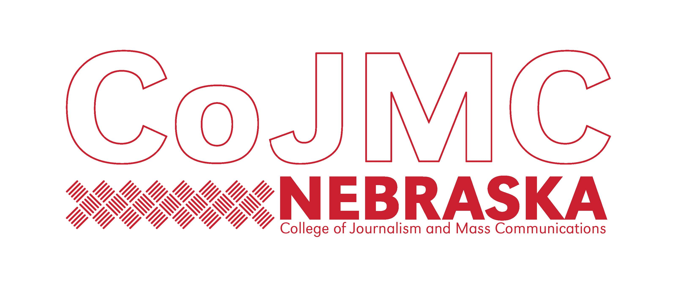
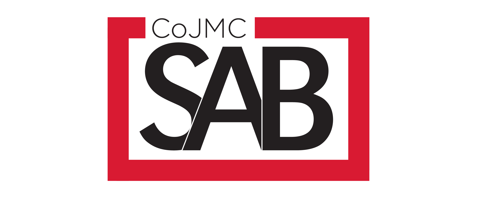
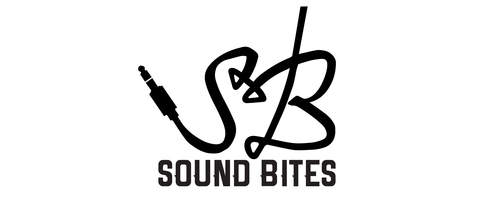
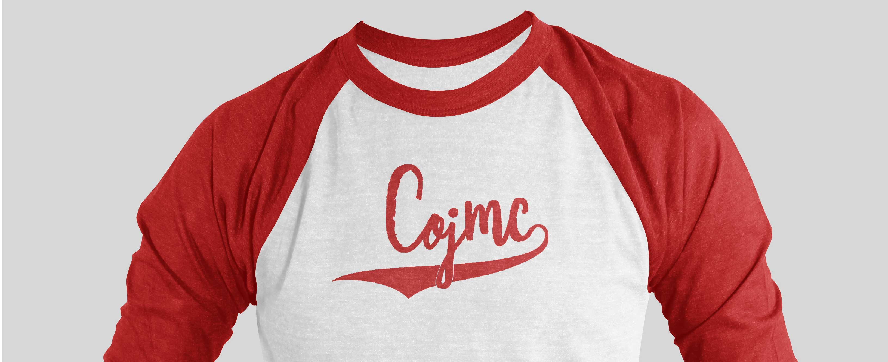

The CoJMC Student Advisory Board serves as a liaison between the student body and faculty/administration. SAB is responsible for relaying students’ opinions and concerns to administration and keeping students informed about college issues. SAB also plans social and educational events for students.
As a member of SAB I was able to design various logos for the group as well as two CoJMC t-shirts. Over 150 t-shirts were sold by SAB in 2017, raising over $1000 for the organization. Events SAB organized during my tenure include:
Student Advisory Board was a great way for me to get involved at CoJMC and start making a difference throughout the college. Through it I learned more about the goals of CoJMC and the needs of students, and gained experience aligning both sides of the equation.